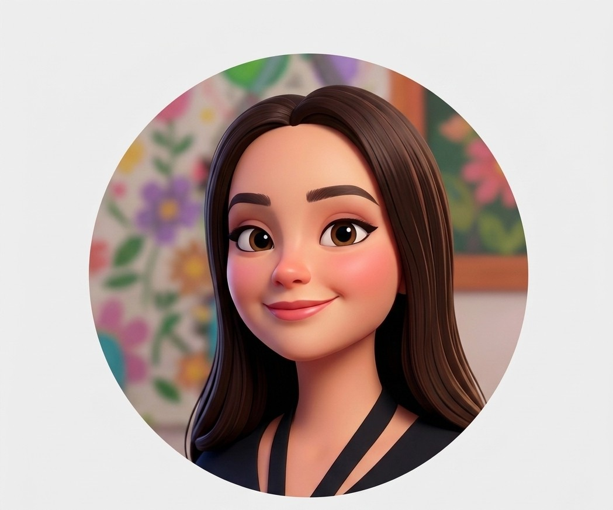
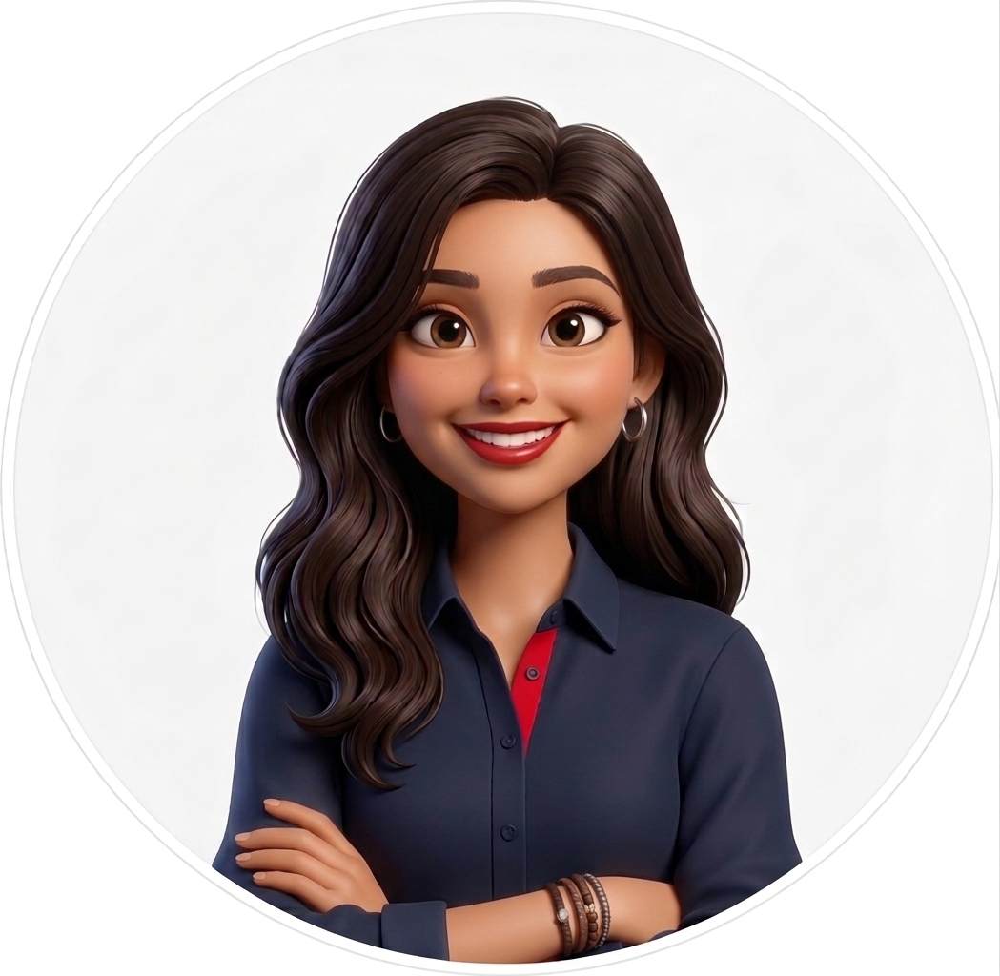
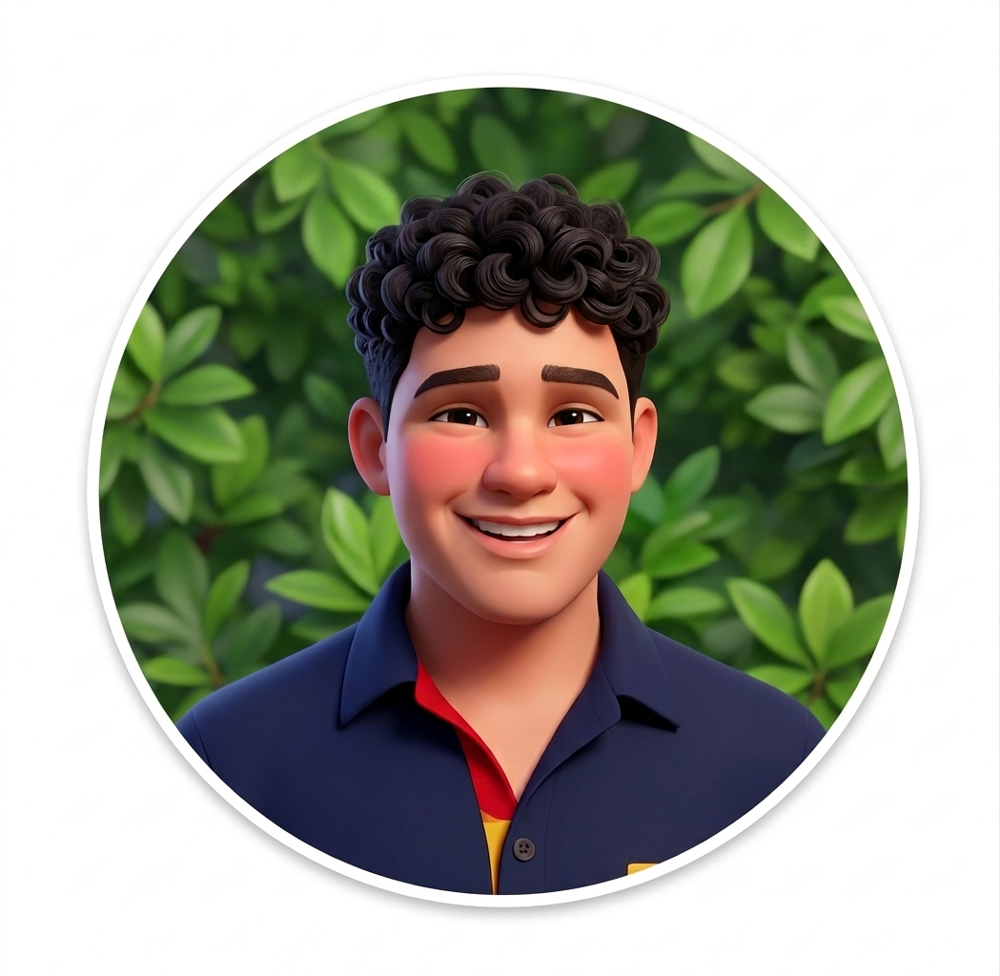

Un semáforo de seguridad que nunca se distrae.
CentinelaIRTRA vigila la zona de abordaje y mantenimiento de una atracción mecánica en tiempo real, y avisa antes de que un descuido se convierta en un accidente.
La vigilancia humana tiene límites
Así identificamos la problemática durante el levantamiento técnico en IRTRA Petapa.
Zonas de riesgo sin monitoreo constante
El personal debe vigilar simultáneamente que ningún visitante se acerque a las partes móviles de una atracción en operación, y que nadie ingrese sin autorización a las zonas de mantenimiento. Un descuido momentáneo puede derivar en un accidente grave.
Automatización con Arduino
Un sistema autónomo mide distancias y detecta movimiento las 24 horas, mostrando el nivel de riesgo con una señal luminosa y sonora clara, sin depender de que un operador esté mirando en ese instante exacto.
Tres sensores, una sola decisión
El circuito combina lectura de distancia, movimiento y control manual del operador para decidir el estado de seguridad.
Ultrasónico HC-SR04
Mide la distancia frente al mecanismo. Si alguien invade el rango seguro, el sistema pasa a alerta.
PIR de movimiento
Detecta presencia en la zona de mantenimiento cuando el sistema está armado fuera de horario de operación.
Push button + LED RGB
El operador arma o desarma el sistema. El LED RGB y el buzzer comunican el estado: seguro, precaución o alarma.
Objetivos de Desarrollo Sostenible
Materiales y estado del sistema
| Componente | Función | Estado |
|---|---|---|
| Arduino Uno R3 | Controlador principal | Funciona |
| Sensor ultrasónico HC-SR04 | Distancia de seguridad | Funciona |
| Sensor PIR | Detección de movimiento | Funciona |
| LED RGB | Señal visual de estado | Funciona |
| Buzzer | Alarma sonora | Funciona |
| Push button | Armar / desarmar sistema | Funciona |
Equipo del proyecto

Natalia Navarro
11F

Sofía Chávez
11F

Mauricio Gaitán
11F